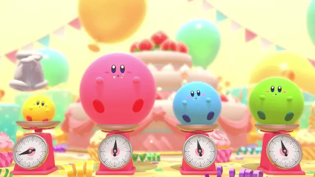
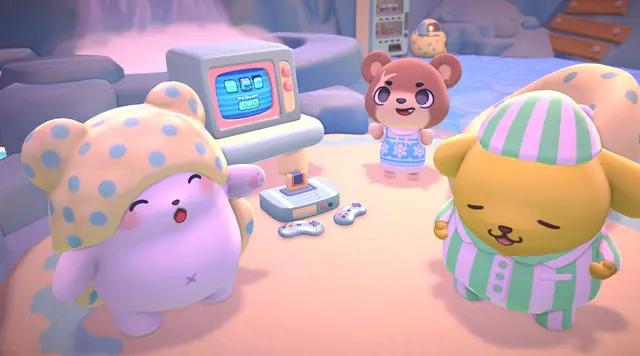
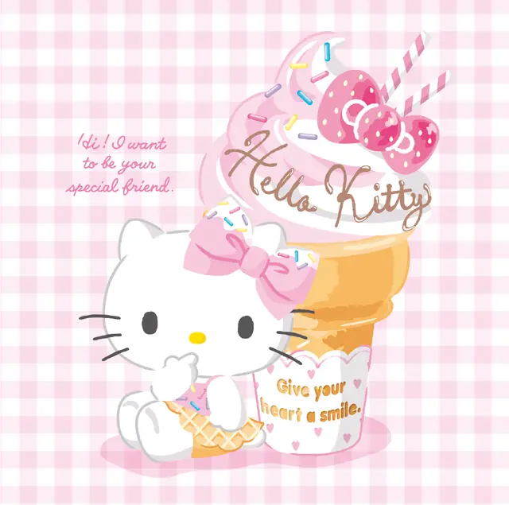
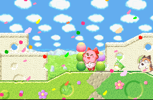
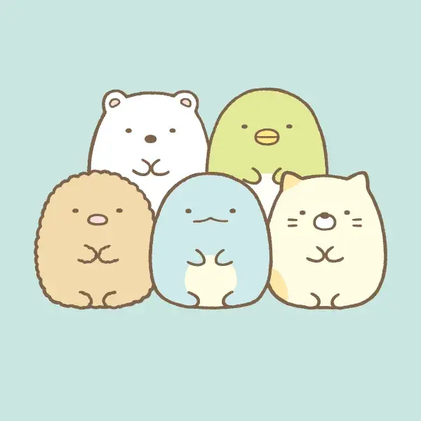
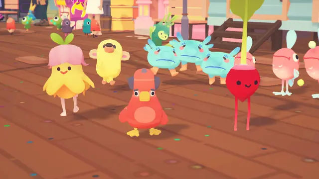
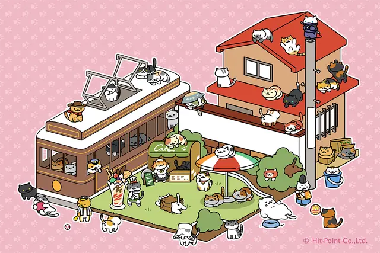
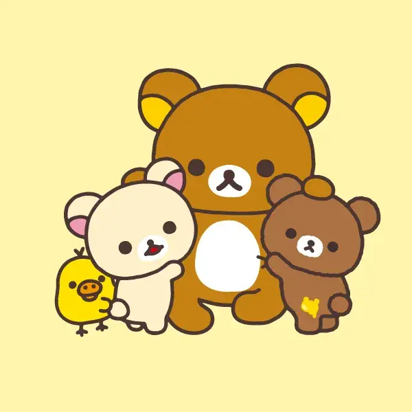
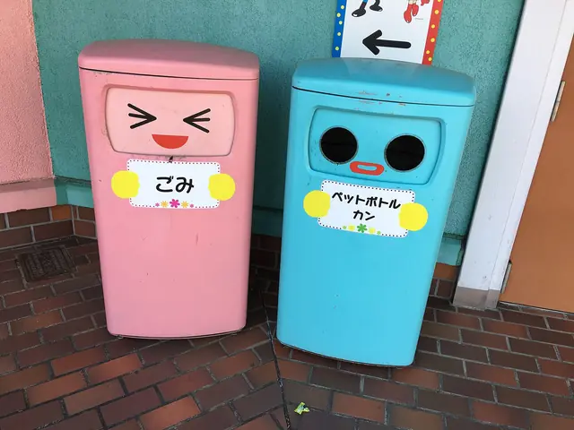
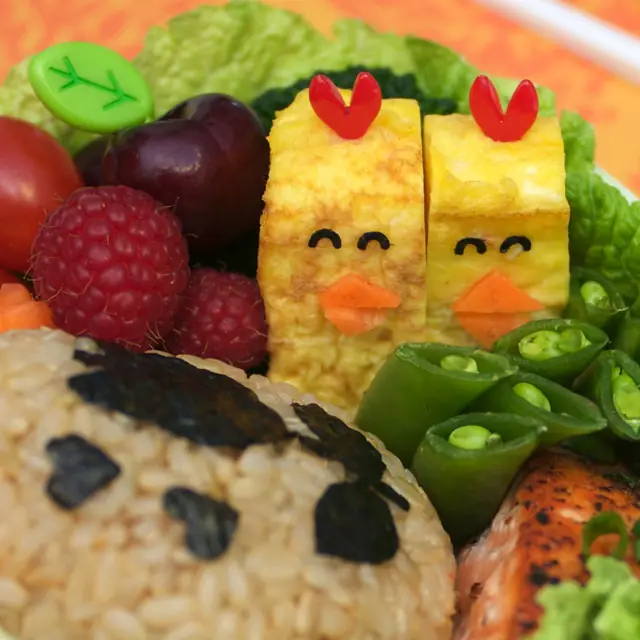

The feel
Kawaii is the Japanese word for cute, with shades of shyness, vulnerability and lovability: think babies and small fluffy creatures.1 Julia Leyda, an associate professor at NTNU who moved to Japan in 2000, says it is "connected solely with things that are lovable and loved, without any potentially ambivalent nuances", and she found cuteness at the centre of almost every kind of Japanese consumer goods.2 Cute features make objects friendlier and easier to approach, and at Hiroshima University, students did better at a fine motor task after looking at pictures of puppies and kittens than after looking at grown dogs and cats.3
Much of the appeal lies in what the design leaves out: Hello Kitty has no mouth so that people can project their own feelings onto her face.4 In the words of Yuko Yamaguchi, her designer from 1980,5 "Kitty looks happy when people are happy. She looks sad when they are sad."4 The worlds around these characters are kept kind. When Nintendo asked HAL Laboratory for more enemies in Kirby and the Forgotten Land, the answer was that it wouldn't be fair to poor Kirby to surround him with an overwhelming number of them,6 and Ooblets turned its battles into dance-offs, because cute creatures attacking each other didn't fit the rest of the game.7
- huggable
- round
- harmless
- sugary
- squishy
- collectable
Where it comes from
The word kawaii grew out of an ancient word, kawa-hayu-shi, which literally means a flushing face.3 The modern craze took off in the 1970s with teenage girls' handwriting, full of large, rounded characters with hearts and stars drawn in,2 and once those girls grew up, kawaii became firmly linked with fashion, soft plush toys and character goods, the psychologist Hiroshi Nittono writes.8 Sanrio created Hello Kitty in 1974 as one of a line of characters to decorate its products, and she first appeared on children's things such as coin purses.9
Core elements
The baby schema
Characters borrow the baby schema that the ethologist Konrad Lorenz described: a large head, a high forehead, large eyes, chubby cheeks, a small nose and mouth, short thick limbs and a plump body.10 Hiroshi Nittono sums up the form as a head larger than the body, a broad forehead and large eyes in the lower half of the face.8
Round silhouettes
Shapes are rounded off. Hello Kitty is a small, round-faced girl,9 and Kirby's silhouette is perfectly round.6 His developers call him a funny little puffball, always squashing and stretching as he gobbles things up.11 Even the 1970s handwriting craze was nicknamed marui ji, round writing.2
Faces of a few marks
Faces come down to a few marks: Hello Kitty has black eyes, a yellow nose and no mouth.9 In Moblets, Rebecca Cordingley's creature-collecting game, the test for a new creature was whether it was cute, and if it was, to "throw a face on it".12
Soft pastel palette
The dreamiest strand, yume kawaii, works in soft pastel tones, with sweets, unicorns, plush toys and characters in candyfloss pink and baby blue.13 Not all kawaii is pastel: Hello Kitty's own world is primary-coloured,9 and at the end of the 1970s she was outsold by Sanrio's Little Twin Stars, whose pastel colouring fans found cute, Yamaguchi recalls.5
Line work in colour
Lines are kept from looking harsh. Yamaguchi traced Kitty's harsh look to her black outline, and set out to draw her like the plush toy, which had no outlines and looked gentle and huggable.5 The illustrator Eku Uekura colours her lines too: tinting each line towards the colours around it blends line and fill, while a dark brown or red outline gives a more distinct, vivid look, and she says she always settles for the latter.14
Safe settings
Places stay bright and unthreatening. Kirby and the Forgotten Land is set in the ruins of a forgotten civilisation, so HAL Laboratory added a bright blue sky, grass and flowers to blend it with Kirby's usual style.11 Instead of decaying ruins, the player explores ruins that show the prosperity and joy of what once was, made to seem like a beautiful place that has merged with nature.11
How to do it
Set the proportions
Make the character two to three heads tall, and keep the hands small next to the face.15,16 Set the eyes low under a high forehead. In infant photos measured by Glocker's team, the top of the head to the eye line averaged 130.8% of the eye line to the chin, which puts the eyes about 57% of the way down the head, and each eye spanned 18.5% of the face's width. Faces pushed past both averages, with a smaller nose and mouth, were rated cuter.10
Build the face on a circle
Draw the face as a circle and divide its lower half into four equal parts: those lines place the eyes, nose and mouth, so every feature sits below the middle.17 Leave at least one eye's width between the eyes, make the nose a small dot, round out the cheeks and add a blush if you like.17,15 Small shifts count on a face this simple. HAL Laboratory spent three months with Good-Feel adjusting where Kirby's eyes and mouth sat for Kirby's Epic Yarn.18
Limit the palette
Uekura picks a theme first, then four or five colours for it, starting with the main colour. Her example is not pastel: for a "mature yet girly" piece she chose pink, then red and white to go with it, then black and brown.14 For the dreamy pastel look, choose the four or five from soft pastel tones such as candyfloss pink and baby blue.13
Tint the line art
Draw lines in colour instead of black. Tinting each line towards the fill beside it blends line and colour and softens bright orange or yellow hair, while a dark brown or red line reads as more distinct and vivid.14 Yamaguchi found that Kitty's black outline was what made her look harsh.5
Cut the details for a chibi
Chibi versions often become product mascots, stickers and figurines.15 Decide what identifies the character and draw it large: Tsukasa enlarges a girl's hair ribbon and ponytail.16 Uekura cuts everything except the details tied to identity, keeping her Sugary-chan's goat horns, triangle bun and curly fringe. In her own work she also gives eyes one highlight at most, so that the outfit design stands out.14
Move flat characters into 3D
A perfectly round body is hard to read from behind, because it is hard to tell which way it faces.6 Kirby's Blowout Blast showed an arrow where Kirby was attacking, but in Kirby and the Forgotten Land the arrow felt like steering the arrow instead of Kirby. HAL Laboratory dropped it: an attack now hits when it looks like a hit on screen, and the camera moves by itself to a view from above or from the side.19 Keep a drawing's quirks. After several tries, Sunblink kept Big Challenges' eyes on one side, as in the only drawing of the alligator, made in 1978.20
Cheat sheet
Do
- Keep the drawing simple and give each character small details of its own, as Ippei Morita did for Neko Atsume's cats.21
- Give every character a story. Yamaguchi rates creating a story above drawing skill and design sense.5
- Change colours and motifs with the trends while the character stays the same. Asked how Hello Kitty stays fresh without losing her essence, Yamaguchi said trends are the key: if roses are in fashion, she thinks of rose designs.4
- Round the head and make the head and eyes a little larger when a character becomes a plush toy, as Sanrio's planners did to match today's "baby face" look.22
- Draw as though the picture will be made into a figurine, as Uekura does, keeping hair and clothes soft.14
Avoid
- Colours too bold for the look you want. Lapsed fans told Yamaguchi that Kitty's colours were too bold and her look too harsh next to the pastel Little Twin Stars.5
- Too many colours in one picture. Uekura finds it hard to use a lot of colours well, so she keeps to four or five.14
- Grown-up details on a chibi. Abs make it look adult instead of childlike, and a hooked nose doesn't suit a chibi face.15
- Settings that tip into horror. Abandoned ruins can feel like a horror game, so Kirby's developers kept checking that the new world didn't seem too scary.11
Tools and tutorials
- Let's draw some mini-characters!
Tsukasa draws a mini character step by step for MediBang: eyes set low, two or three heads tall, lines kept simple.16
- How YOU can draw a girl's face in a cute way
Depe builds a round face on a circle, with every feature below the centre.17
- General guide to drawing chibis
eonovels on chibi proportions and which features to exaggerate, deform or leave out.15
- Krita
A free paint program for soft colouring and tinted line art.
- Inkscape
A free vector editor for round shapes. Outset a path to draw a sticker's white border.
Palette
Kirby pink, blush and butter yellow come from the Kirby's Dream Buffet cake art, strawberry milk from the Hello Kitty portrait, mint from a balloon in the Dream Buffet weigh-in, lavender from the pyjama scene in Hello Kitty Island Adventure, sky blue from Kiki's star hood in the Little Twin Stars art, and the cocoa line from the outlines of San-X's Sumikko Gurashi.
Feel the vibe
In motion
Listen
Springy and cheerful, for sketching round characters that bounce.
YouTubeSweet, upbeat pop with the same soft edges as the game's pastel island.
YouTubePlucky and playful, good for a long session of drawing small, odd creatures.
YouTubeGentle and unhurried, like an afternoon spent waiting for cats to visit the yard.
YouTubeCandy-coloured pop at full sugar, for when the sticker sheet needs more sparkle.
YouTube
More references




















Games
- Kirby's Dream Land 3
Hand-drawn sprites with a pixel-blending technique that gives Kirby and his world a watercolour look.23 Study the soft colour on round shapes.
- Neko Atsume: Kitty Collector
You set out food and toys in a garden and wait for Ippei Morita's simply drawn cats to visit.21 Study how few lines each cat needs.
- Kirby's Dream Buffet
Up to four Kirbys race over courses of chocolate, ice cream and strawberries, growing bigger the more they eat.24 Study how a whole level is built out of cake and sweets.
- Ooblets
Rebecca Cordingley drew almost everything you see, and her ooblets are based on plants, on jellyfish, or sometimes just on bears wearing pants.25 Study how many creatures one simple face style can carry.
- Hello Kitty Island Adventure
Sanrio's flat character art built in 3D, down to an alligator known from one drawing made in 1978.20 Study how the 2D faces survive the move.
Film, art and more
- Hello Kitty
Sanrio's small, round-faced girl with black eyes, a yellow nose, no mouth and a red bow on her left ear.9
- Little Twin Stars
Kiki and Lala, Sanrio's twin star children and its best sellers at the end of the 1970s, drawn in pastel colours.5
- Sanrio Standard Plush
Sanrio's plush range shows each character as it would look if it existed in the real world, and every one of them sits.22 Study how a flat drawing becomes a soft object.
- Yume kawaii illustration
pixiv's collection of the dreamy pastel strand: sweets, unicorns, plush toys and candyfloss colours.13
- Sugary Girls: Amakute Oishii Yousou-ten
Girls drawn as if they were made of sugar.14 Study her tinted line art and simple eyes.
Sources
- 1What is kawaii – and why did the world fall for the 'cult of cute'?
- 2Japan's cuteness phenomenon is hundreds of years old
- 3The Power of Kawaii: Viewing Cute Images Promotes a Careful Behavior and Narrows Attentional Focus
- 410 Questions for Yuko Yamaguchi
- 5Interview: Third Hello Kitty Designer Yuko Yamaguchi [1/2]
- 6Ask the Developer Vol. 4, Kirby and the Forgotten Land, Chapter 1
- 7Developer Interview: Glumberland
- 8Experimental Psychology Attempts to Explain "Kawaii"
- 9Hello Kitty
- 10Baby Schema in Infant Faces Induces Cuteness Perception and Motivation for Caretaking in Adults
- 11Ask the Developer Vol. 4, Kirby and the Forgotten Land, Chapter 3
- 12Moblets will let you catch creatures way cuter than Pokémon
- 13Drawings of Yume Kawaii Style - Sweet Dreams
- 14Eku Uekura's self-indulgent fixation in her illustrations: "I want both the costume designs and the girls in the spotlight."
- 15General guide to drawing chibis
- 16[Easy Steps 123] Let's draw some mini-characters!
- 17How YOU can draw a girl's face in a cute way
- 18Iwata Asks: Kirby's Epic Yarn, 6. Three Months Designing Kirby
- 19Ask the Developer Vol. 4, Kirby and the Forgotten Land, Chapter 2
- 20Hello Kitty's back on tvOS
- 21Fill Your Phone with Cats: "Nekoatsume"
- 22Sanrio Plush Toys: Gentle Companions for Everyday Moments
- 23Kirby's Dream Land 3
- 24Kirby's Dream Buffet
- 25Growing Ooblets, the gorgeous farm battler